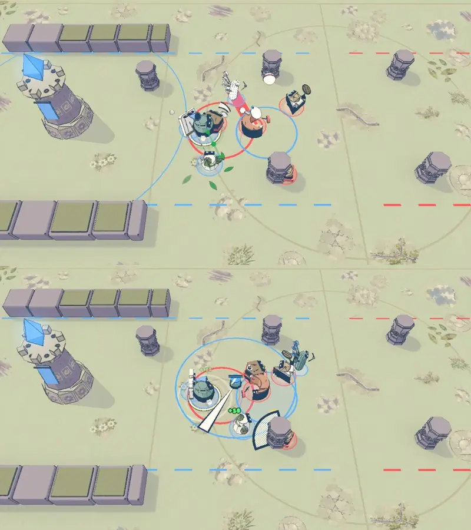
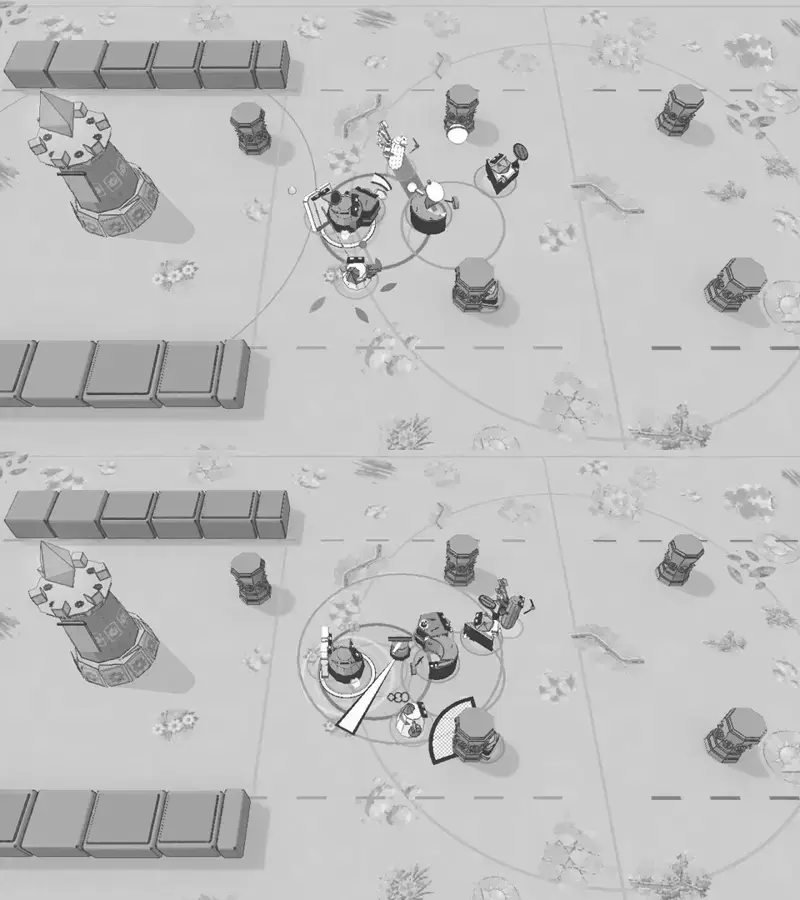

The cast in motion
Eight heroes take the court. Each has a distinct draw, strike and recovery; water, cord and stone still belong to the same world.
Judge whether the bodies and hostile ground remain clear when the kits meet.
Six seconds at authored speed. Staged four against four on Overthrow, with real pointer and Q/W inputs for Undine and seven ordinary hard bots. Seven heroes cast. No injected damage, no HUD, no claim about hardware frame rate or input latency. Facts and staging.
Colour and grayscale


The final control correction lets held movement wait for a cast to finish. Stop and Cancel still interrupt it. The crowded clip above predates that correction; the linked input checks cover it. A final Rain clip and its cast record check the relocated team boundary and the corrected idle and landing-circle drawing.
The company
| Hero | The kit |
|---|---|
| Ibis | The bow draws taut; Rain and Vault keep their own shapes. |
| Kappa | The glove loads, catches and returns. The integrated clip shows the revised Toss. |
| Oolong | A palm, a raised heel, a planted guard and a measured drink. |
| Lasso | The weight and its strokes turn together; the binding follows its victim. |
| Mandador | Pass, exchange and rally each have a call and an answer. |
| Undine | The jug throws water with weight; the sprinkler shows where its blade passes. |
| Carambola | The paddle serves, banks and lobs; each Pinball hit waits for its flight. |
| Salvia | Mend gathers and pours; Ward forms, takes blows and breaks or expires. |
The earlier Balloon study remains alongside Undine's whole kit.
The linked pages retain baseline and correction clips. Current basics all draw for 0.3 seconds; older Ibis and Carambola clips show their earlier 0.15 seconds. Kappa has a fresh integrated clip. Mandador and Salvia have source baselines without before videos.
All 23 slots, eight basics and declared traits are covered in the coverage record. Guest and input checks cover all four held-input paths, eight idle hero views, 229 compact packets and 53 active dash samples; no live two-peer session was filmed. Integration result · Exact owned files.